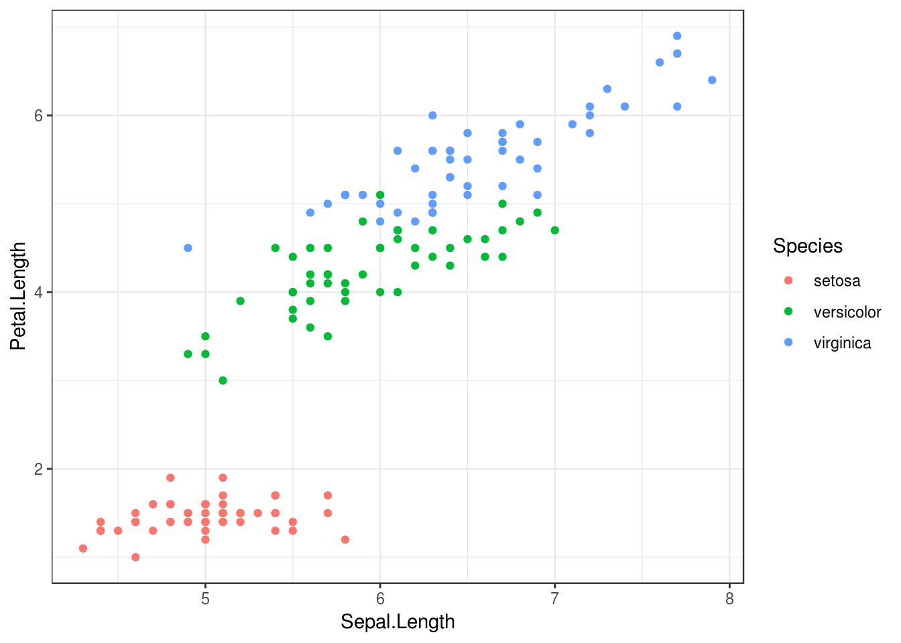

ggplot2による可視化入門
fukuoka.R #11
kazutan
2018/9/15
about ggplot2
ggplot2 パッケージ
- “Grammer of Graphics”のコンセプトを実装したパッケージ
- 現在Rにおけるグラフィックで非常に大きな支持を得ている
- グラフィックの構成要素を意識したレイヤー構造を持つ
- いわゆる｢重ね書き｣をイメージするとわかりやすい
- 拡張パッケージがたくさん
- (ちょっと勉強すれば)自分でいろいろ作れる
- tidyverseパッケージ群のひとつ
- tidyverseのグラフィック担当
インストール
CRANからインストールする場合:
install.packages("ggplot2")開発版(github)からインストールする場合:
devtools::install_github("tidyverse/ggplot2")tidyverseパッケージ群なので、これでもインストールされる(推奨)
install.packages("tidyverse")読み込み
他のパッケージ同様にこれでOK
library(ggplot2)tidyverseでインストールしたならこっちでもOK(推奨)
library(tidyverse)dplyrなどのパッケージもこれで読み込まれるので楽
Hello, ggplot2
グラフィックに必要な要素
ggplot2では、グラフィックに必要な要素を主に以下のように区分して整理
- data and aesthentic mapping: データと審美的要素
- データを描画するものだから必須
- ｢そのデータをxy座標へどのようにマッピングするか｣も必須
- layer: 描画するレイヤー要素
- geometric: 描画対象
- マッピングさせたデータをどのように描画するのか
- 点、棒、円、タイル、地図など
- statistic: 数値の処理
- データをプロットするにあたって、｢どんな処理をするのか｣
- ｢そのままの値｣だったり｢平均した値｣だったり
- geometric: 描画対象
- scale: データの値を可視化用の値に反映させるための設定
- データ自体ではなく、主にプロットの軸に関する設定となる
- ｢y軸は0からスタートさせるか、対数メモリにするか｣など
- theme: プロットの表現的な設定
- プロットのデザイン的要素に関する設定
- フォントサイズや配色、legendやtitleの配置など
- misc: その他
- facet構造やcoordシステムなど
使用するデータについて
ではさっそく描いてみましょう。使用するデータはirisを用います:
str(iris)## 'data.frame': 150 obs. of 5 variables:
## $ Sepal.Length: num 5.1 4.9 4.7 4.6 5 5.4 4.6 5 4.4 4.9 ...
## $ Sepal.Width : num 3.5 3 3.2 3.1 3.6 3.9 3.4 3.4 2.9 3.1 ...
## $ Petal.Length: num 1.4 1.4 1.3 1.5 1.4 1.7 1.4 1.5 1.4 1.5 ...
## $ Petal.Width : num 0.2 0.2 0.2 0.2 0.2 0.4 0.3 0.2 0.2 0.1 ...
## $ Species : Factor w/ 3 levels "setosa","versicolor",..: 1 1 1 1 1 1 1 1 1 1 ...描画キャンパス(オブジェクト)の用意
まず、描画するためのオブジェクトを準備してみましょう:
# ggplotのキャンバスを作成
# あわせてdataとaesも指定
p_0 <- ggplot(data = iris, mapping = aes(x = Sepal.Length, y = Petal.Length))
# 書き出してみる
p_0これでキャンパスが作成できています。このp_0には以下のような感じになっています:
- data: iris
- mapping-aes:
- x: Sepal.Length
- y: Petal.Length
つまり、データとマッピングに関する情報がp_0には含まれています。ただ、これだけではどう描いていいのかわかりません。
キャンパスにlayerを“重ねる”
先ほど作成したp_0に、layerを重ねてみます:
# ggplot2ではレイヤーなどを重ねるのに `+` を使います
p_1 <- p_0 +
layer(geom = "point", stat = "identity", position = "identity")
# 描いてみる
p_1このp_1は、以下のような感じになります:
p_0の要素(デフォルト要素)- data: iris (データフレーム)
- mapping-aes:
- x: Sepal.Length (変数名)
- y: Petal.Length (変数名)
- layer1
- geometric: point (点で描画することを指定)
- stat: identity (そのままの値で扱うことを指定)
- posiiton: identity (そのままの値で扱うことを指定)
これを整理して簡易化すると、以下のようになります:
- data: iris
- mapping-aes:
- x: Sepal.Length
- y: Petal.Length
- layer1:
- geometric: point
- stat: identity
油絵のように要素を重ねていくことによって、ひとつの絵が出来上がるイメージですね。ではもう1つlayerを重ねてみます:
# pointのlayerが入ってるp_1に加えます
p_1_2 <- p_1 +
layer(geom = "line", stat = "identity", position = "identity")
# 描いてみる
p_1_2
このp_1_2は以下のような感じになっています:
p_0の要素(デフォルト要素)- data: iris (データフレーム)
- mapping-aes:
- x: Sepal.Length (変数名)
- y: Petal.Length (変数名)
- layer1
- geometric: point (点で描画することを指定)
- stat: identity (そのままの値で扱うことを指定)
- posiiton: identity (そのままの値で扱うことを指定)
- layer2
- geometric: line (線で描写することを指定)
- stat: identity (そのままの値で扱うことを指定)
- posiiton: identity (そのままの値で扱うことを指定)
これを整理して簡素化すると、以下のようになります:
- data: iris
- mapping-aes:
- x: Sepal.Length
- y: Petal.Length
- layer1:
- geometric: point
- stat: identity
- layer2:
- geometric: line
- stat: identity
これがよく言われる｢ggplot2のレイヤー構造｣です。
geom, statの活用
上述のとおり、layer関数でlayerを作成して重ねていけばいいのですが、実際のところlayer関数はあまり使われていません。たとえばp_1_2のように描きたいのであれば、以下のように書きます:
# 引数名も省略するパターンが多い
p_2 <- ggplot(iris, aes(x = Sepal.Length, y = Petal.Length)) +
geom_point() +
geom_line()
p_2このgeom_*は、｢geometricに*を指定するときにいい感じに出てくれる設定をまとめてくれて、layer関数に流しこむ｣関数です。例えばpoint(点)で描こうとするなら、データはそのままの値を利用(stat = identity)でしょうし、他にもお約束となる設定があるでしょう。このgeom_*関数は、それらを効率よくするためのショートカットです。
グループ化
たとえば、｢条件ごとに色を変えて、それをひとつのプロットに重ねて描きたい｣ということがあるでしょう。ggplot2ではこの場合以下のように指定します:
# aesにcolor = Speciesを追加
p_3 <- ggplot(iris, aes(x = Sepal.Length, y = Petal.Length, color = Species)) +
geom_point()
# 出力
p_3｢条件によって色を変えて描く｣ということは、(1)データをある変数の値でグループ化、(2)グループ化したデータを元に描いて重ねる、という手続きと同じです。ggplot2ではmapping要素として｢colorの違いはSpeciesで｣と指定することで実現できます。なお、今回は離散変量でしたが、連続変量でも可能です:
# aes内を変更
p_3_2 <- ggplot(iris, aes(x = Sepal.Length, y = Petal.Length, color = Petal.Width)) +
geom_point()
p_3_2また、色ではなく形や線種、透明度でグループ化変数を表現できます:
# shapeで形になります
p_3_3 <- ggplot(iris, aes(x = Sepal.Length, y = Petal.Length, shape = Species)) +
geom_point()
p_3_3scale
軸周りの設定はscale_*_hogeという関数で設定を追加していきます:
# デフォルトを作っておく
p_4_0 <- ggplot(iris, aes(x = Sepal.Length, y = Petal.Length, color = Species)) +
geom_point()
# y軸を0から7までに
p_4_0 + scale_y_continuous(limits = c(0, 7))このあたりは非常に多くの設定がありますが、mappingで指定している内容を意識していればわかりやすいでしょう。あとは参考資料をぜひお手元に。
theme
背景色とか目盛線の色などはthemeの範囲となります:
# 白黒系テーマを当ててみる
p_4_0 + theme_bw()
このあたりも非常に多くの設定がありますので、覚えるのではなくチートシートといった便利な資料を手元においておいて、その都度確認でいいと思います。
title, labelsなど
グラフタイトルや軸･凡例ラベルに関する設定です:
p_4_0 +
labs(title = "タイトルだよー",
subtitle = "サブタイトルだよー",
caption = "図のキャプションだよーだよー",
x = "えっくすじくだよー",
y = "わいじくだよー",
color = "からーだよー")このあたりも非常に多くの設定がありますので、覚えるのではなくチートシートといった便利な資料をいつでも参照できるようにすることをおすすめします。
facet
｢条件ごとに色を変えて重ねてプロット｣ではなく、｢条件ごとに別々の図にして並べたい｣という場合があります。ggplot2ではfacetという機能でこれを実現します:
# Speciesごとに分けて、行方向にプロット
# vars()で与えればOK
p_4_0 +
facet_grid(rows = vars(Species))facet_gridは行方向･列方向への区分けに変数を利用していきます。
# 行数や列数を指定する場合はfacet_wrapの方が便利
# 切り分ける変数はformulaで与える
p_4_0 +
facet_wrap(~Species, nrow = 2)
このあたりの指定の仕方はいろいろパターンがあるので、それぞれの関数のヘルプもしくは資料を参考にしてください。
coordinate
｢縦軸と横軸を入れ替えたい｣とか｢一部をズームアップしたい｣といった場合にはcoordinateシステムを利用します:
# 横軸と縦軸を入れ替える場合はcoord_flipを当てる
p_4_0 +
coord_flip()ggplot2 gallary
geom_point
点をプロットします。いわゆる散布図です:
ggplot(iris, aes(x = Sepal.Length, y = Sepal.Width, color = Petal.Length, shape = Species)) +
geom_point()mapping-aesにはxとyが必須となります。その他colorで色分け、shapeで店の形状で分けていくことができます。
また、geom_smoothと組み合わせて回帰直線の当てはめなどができます:
ggplot(iris, aes(x = Sepal.Length, y = Sepal.Width, color = Species)) +
geom_point() +
geom_smooth(method = "lm")geom_histgram
ヒストグラムをプロットします:
ggplot(iris, aes(x = Sepal.Length)) +
geom_histogram()## `stat_bin()` using `bins = 30`. Pick better value with `binwidth`.mapping-aesにはxが必須となり、yは指定しません(なぜなのかよく考えてみましょう)。xに離散変量をしていすればそのまま頻度を出しますが、連続変量を指定した場合は区間を区切って頻度を算出します。区切りの区間数を指定したい場合は以下のようにします:
# geom_histgramにbin_width引数で区間の幅を、bins引数で区間数を指定できます
ggplot(iris, aes(x = Sepal.Length)) +
geom_histogram(bins = 10)また条件で色分けしていくなら、以下のようなバリエーションがあります:
# aesにてfillを指定
# barの場合、colorは外枠でfillが塗りつぶしになります
ggplot(iris, aes(x = Sepal.Length, fill = Species)) +
geom_histogram(bins = 10)上の図と比較してみてください。
box plot
箱ひげ図と言われるものです:
ggplot(iris, aes(x = Species, y = Sepal.Length)) +
geom_boxplot()mappping-aesにはxに離散変量、yに連続変量を指定することが必須となります。また、実際のデータがどんな分布をしているかを掴みやすくするため、geom_jitterをよく組み合わせます:
ggplot(iris, aes(x = Species, y = Sepal.Length)) +
geom_boxplot() +
geom_jitter()jitterはある程度左右に｢散らした｣点をプロットしますので、boxplotとの相性がいいです。ただ、プロットする観測点が非常に多い場合にはかえって見難くなるので注意してください。
geom_violin
通称バイオリンプロットと呼ばれるものです:
ggplot(iris, aes(x = Species, y = Sepal.Length)) +
geom_violin()各条件でどのような分布をなしているかを確認するのに向いています。
geom_bar
棒グラフを描画します。サンプル用にデータを作成します:
# サンプルデータ作成
df_1 <- data.frame(
d1 = sample(letters[1:5], 300, replace = TRUE, prob = c(1, 2, 3, 4, 5)),
d2 = sample(letters[18:20], 300, replace = TRUE, prob = c(1, 3, 6)),
d3 = sample(letters[22:23], 300, replace = TRUE, prob = c(3, 7)),
c1 = rnorm(300, 100, 10),
c2 = rnorm(300, 150, 20),
c3 = rnorm(300, 50, 10)
)
# 集計
library(tidyverse)
df_1_agg1 <- df_1 %>%
group_by(d1, d2) %>%
summarise(mean_c1 = mean(c1),
se_c1 = sd(c1) / sqrt(n())) %>%
ungroup()
# 内容の確認
str(df_1_agg1)## Classes 'tbl_df', 'tbl' and 'data.frame': 15 obs. of 4 variables:
## $ d1 : Factor w/ 5 levels "a","b","c","d",..: 1 1 1 2 2 2 3 3 3 4 ...
## $ d2 : Factor w/ 3 levels "r","s","t": 1 2 3 1 2 3 1 2 3 1 ...
## $ mean_c1: num 101.5 97.2 100.6 112.3 93 ...
## $ se_c1 : num 7.95 2.19 2.78 5.67 2.41 ...このような集計データからプロットするときには、stat = "identity"を利用します:
# position = "dodge"で横に並べる配置になる
ggplot(df_1_agg1, aes(x = d1, y = mean_c1, fill = d2)) +
geom_bar(stat = "identity", position = "dodge")また、多くの場合エラーバーを重ねるかと思います。今回はすでにseを算出しているので、これを利用してgeom_errorbarを当てます:
ggplot(df_1_agg1, aes(x = d1, y = mean_c1, fill = d2)) +
geom_bar(stat = "identity", position = "dodge") +
geom_errorbar(aes(ymax = mean_c1 + se_c1, ymin = mean_c1 - se_c1),
width = 0.5, position = position_dodge(width = 0.9))geom_tile
いわゆるヒートマップです:
# geom_barで使ったデータを利用します
# 第3の
ggplot(df_1_agg1, aes(x = d1, y = d2, fill = mean_c1)) +
geom_tile()このように、簡単にタイルを描くことができます。またそれぞれのタイル上に値を重ねるなら、geom_textを利用します:
ggplot(df_1_agg1, aes(x = d1, y = d2, fill = mean_c1)) +
geom_tile() +
geom_text(aes(label = round(mean_c1, digits = 1)), color = "white")最後に
ggplot2で描くコツ
- dataとmapping(aes)を意識する
- どんなデータでどんなマッピングをさせるのかが重要
- 離散と連速を意識する
- 多くのミスがここになります
- ggplot2では離散型はfactor, charactor, boolean
- データの加工などはggplot内で極力さける
- データ処理プロセスと描画プロセスは分けたほうがわかりやすい
- まずはシンプルなものから作っていく
- いきなりいろいろ重ねるのではなく、一つ重ねては実行して確認
- 結局こっちのほうが早いことが多い
- いろんなサンプルコードを“写経”する
- 手を動かさないと無理
参考資料
たくさんありますが、以下の資料をおすすめします:
- RユーザのためのRStudio［実践］入門
- http://gihyo.jp/book/2018/978-4-7741-9853-8
- 通称｢宇宙本｣
- ggplot2だけではなく、RStudioからデータハンドリング、ドキュメント生成までカバー
- ggplot2 チートシート(pdfファイル)
- file:///home/kazu/Downloads/data-visualization-2.1.pdf
- これほど見事に、かつ綺麗にggplot2のエッセンスが詰まった資料はない
- 作業するときはぜひ手元に
- ggplot2公式サイト
- https://ggplot2.tidyverse.org/index.html
- ggplot2の全てがここにあります
- 特に関数一覧であるreferenceが最強
- r-wakalang
- 日本のRコミュニティによるSlack
- ここで質問すれば恐ろしい速さで答えがきます
- ggplot2関連なら、r-beginnersもしくはggplot2のチャンネルで
Enjoy!